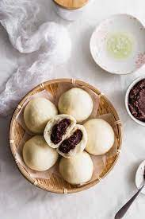

Steamed bread stuffed with Japanese chesnuts and azuki beans

ingredints
- 120g weak flour
- 1 and ½ tsp baking powder
- 60g sugar
- 1 tbsp vegetable oil
- 1 egg
- milk (enough to equal 120mL when combined with egg)
- 160g tsubu (chunky) anko
- 4 candied chestnuts
How to make
- Cut candied chestnuts in half. Place egg in a bowl. Add milk until the liquid weighs 120mL. Add sugar and vegetable oil, and mix well.
- Vigorously stir flour and baking powder into the bowl. Beat with an eggbeater/whisk until all flour is mixed in (A)
- Using a spoon, fill paper cups halfway with mixture. Evenly divide anko and place a spoonful in the middle of each cup (B). Place 1 chestnut piece per cup.
- Place cups in steamer. Put on the lid, and steam on low for 10 minutes. Poke with bamboo skewers, when nothing sticks, they’re done.
return